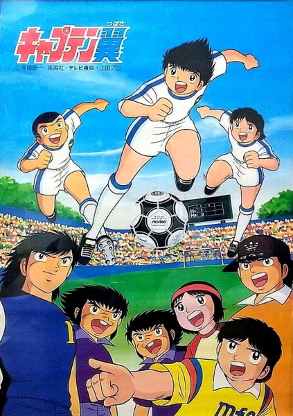
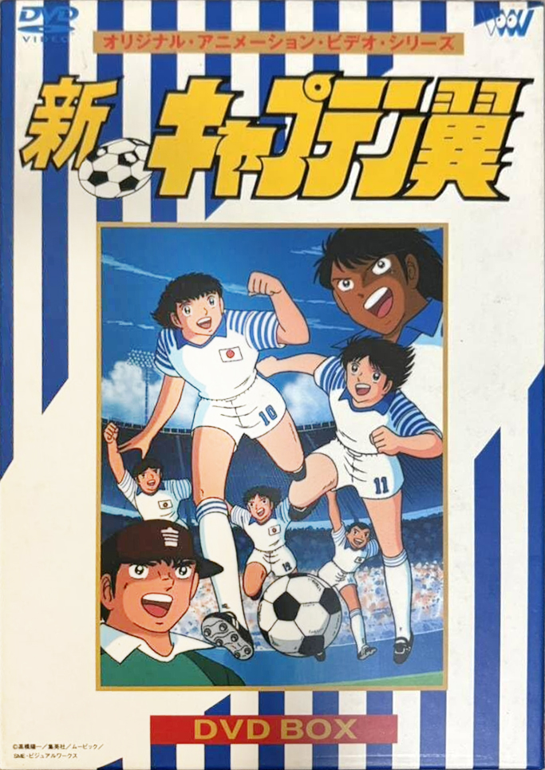
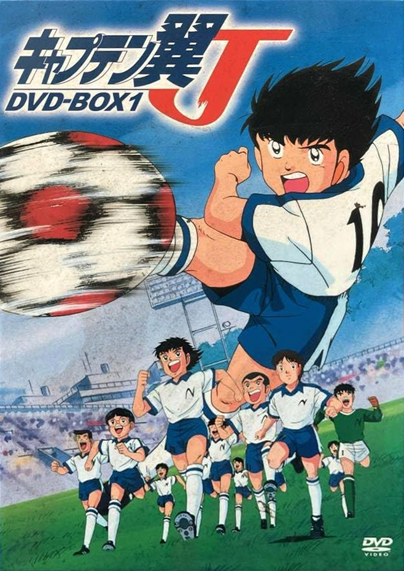
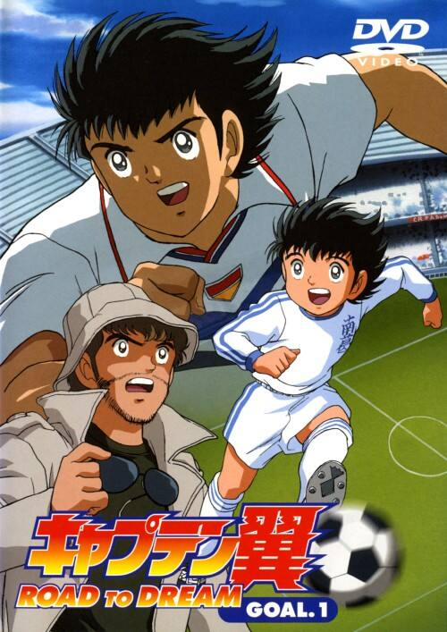
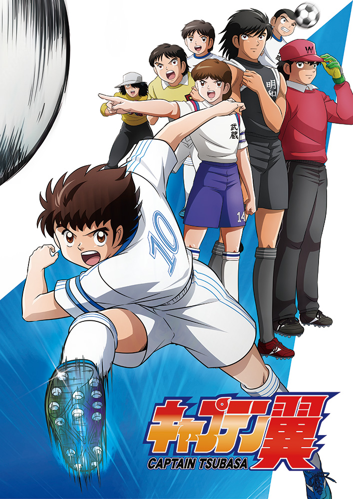
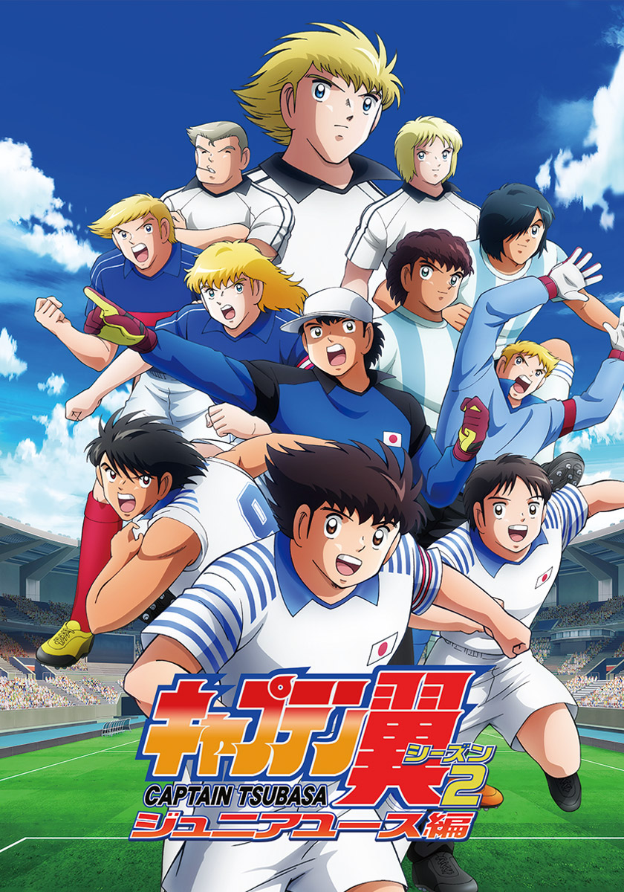
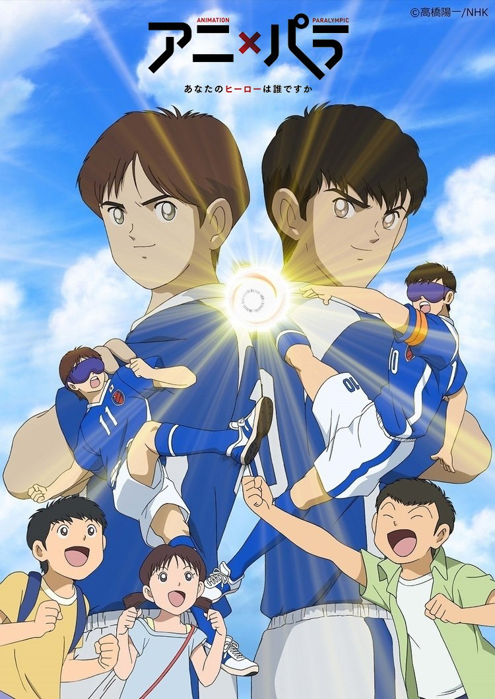
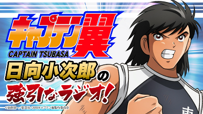

1983TV
《足球小将》（昭和版）
キャプテン翼 / Captain Tsubasa
第一部电视动画，改编自漫画的小学篇至初中篇。大空翼从南葛市的小学出发， 与若林源三、日向小次郎等对手交锋，一路走向全国大赛。这一版成为无数 80、90 后的童年记忆， 主题曲《燃烧的英雄》（燃えてヒーロー）至今传唱不衰。

自 1983 年首部电视动画播出以来，《队长小翼》先后推出了 5 部 TV 动画、1 部 OVA 与 5 部剧场版。 从昭和时代到平成、令和时代，这部作品以不同的画风与叙事，陪伴了一代又一代的足球少年成长。
从 1983 年到 2023 年，按作品播出（上映）顺序排列。
キャプテン翼 / Captain Tsubasa
第一部电视动画，改编自漫画的小学篇至初中篇。大空翼从南葛市的小学出发， 与若林源三、日向小次郎等对手交锋，一路走向全国大赛。这一版成为无数 80、90 后的童年记忆， 主题曲《燃烧的英雄》（燃えてヒーロー）至今传唱不衰。

キャプテン翼 ヨーロッパ大決戦 / Captain Tsubasa: Europe Daikessen
日本少年队出征欧洲，在巴黎与以足球皇帝卡尔·海因茨·施奈德为首的欧洲少年队展开对决。
官方简介（映画ナタリー／ぴあ）：改编自《周刊少年Jump》连载漫画，继电视动画之后登上大银幕，是一部催生了无数足球少年的青春体育动画。TV 版曾创下 21.2% 的最高收视率，本片同样大受欢迎。主人公大空翼的必杀射门与空中踢技等看点满满。全日本少年选拔队远征欧洲，与欧洲劲旅展开白热化的激战……
キャプテン翼 危うし！全日本Jr. / Captain Tsubasa: Ayaushi! Zen Nippon Jr.
承接第一部剧场版，讲述施奈德率领的欧洲少年队来日本比赛的故事，含大量原创必杀技。
官方简介（映画ナタリー／ぴあ）：据称许多现役职业球员正是因本片而立志成为足球运动员，本片是人气动画剧场版系列的第 2 作。自欧洲远征凯旋一年后，这次改由欧洲选拔队来日比赛。然而全日本队有两名主力缺阵。大空翼凭借活跃表现先拔头筹，但随后欧洲队展开了怒涛般的反击……
キャプテン翼 明日に向って走れ！ / Captain Tsubasa: Asu ni Mukatte Hashire!
初中决赛、南葛三连霸之后，日本选拔队远征欧洲。影片在红黄对抗赛中，通过小翼对若林的回忆， 串联起两人的相识过程。
官方简介（映画ナタリー／ぴあ）：剧场版动画系列第 3 弹。中学足球大赛结束后，为备战欧洲远征，全日本选拔队再度集结并开始集训。小翼一边回顾过往，一边与门将若林、归队的岬等人投入艰苦特训。
キャプテン翼 世界大決戦！！ Jr.ワールドカップ / Captain Tsubasa: Sekai Daikessen! Jr. World Cup
接续第三部，日本初中队出征美国，改编为美国、日本、欧洲、南美四国争霸。 面对恩师罗伯特带领的南美队，小翼用实力给出回答。
官方简介（映画ナタリー／ぴあ）：继原作漫画、电视动画、剧场版之后，这部于 80 年代中期大热的人气动画迎来系列最终作。本片中原作者新设计的角色登场，在系列最高潮中落下帷幕。全日本少年选拔队出战少年世界杯，与欧洲、美国、南美各队为夺冠展开激战。
新キャプテン翼 / Shin Captain Tsubasa
改编自漫画版全日本青年队参加世少赛的篇章。讲述全日本少年队远征欧洲、 征战国际少年足球大赛并最终夺冠的故事，是连接小学篇与世青篇的重要动画作品。

キャプテン翼J / Captain Tsubasa J
1994 年的重新制作版本。剧情从小学生篇开始，结束后直接跳转到世青篇开头， 由葵新伍的登场展开新章。可惜故事再次在抵达终点前完结。

キャプテン翼 最強の敵！オランダユース / Captain Tsubasa: Saikyo no Teki! Holland Youth
为备战世青赛，日本队与荷兰青年军展开热身赛。在缺少翼的情况下前两场告负， 最终翼回国后，重振旗鼓的日本青年军还以颜色，大胜对手。
キャプテン翼 ROAD TO 2002 / Captain Tsubasa: Road to 2002
从最初的小学篇开始，一直到《ROAD TO 2002》的开篇，几乎涵盖了当时所有的漫画内容。 内容精炼，并加入了不同于漫画版的原创 2002 相关剧情。

キャプテン翼 / Captain Tsubasa (2018)
官方中文译名《队长小翼》由此而来。以高品质动画视觉重新描绘大空翼的故事， 将剧情重新调回小学时代。续作《队长小翼 第二季 青少年篇》于 2023 年播出。

キャプテン翼 シーズン2 ジュニアユース編 / Captain Tsubasa Season 2: Junior Youth
系列最新的 TV 动画，承接 2018 年版第 1 季。大空翼率领全日本青少年队征战国际青少年大赛， 先后与世界各地的强敌交锋，向世界展示日本足球少年的成长与蜕变。

动画正篇之外的特典影像与衍生档案：OVA《新・キャプテン翼》的限定影像特典、NHK《アニ×パラ》盲人足球短片的幕后特辑， 系列衍生出的残奥特别动画短片、2018 版 TV 动画的官方应援网络广播，以及与《FNS27時間テレビ》联动的原创短片。
新・キャプテン翼 キャラクターカタログビデオ SPECIAL ISSUE
1989–1990 年 OVA《新・キャプテン翼》录像带系列的限定特典影像，随卷推出——片中开场即向观众致谢"第二季第 8 卷隆重发售"。全长约 23 分钟，由 16 位主要角色的配音演员亲自登场，配合动画名场面逐一解说角色魅力：从大空翼、日向小次郎领衔的日本国青队，到阿根廷的胡安·迪亚斯、法国的路易·拿破仑与皮埃尔、德国的施奈德等世界强敌，最后以罗伯特·本乡收尾。片尾声优们坦言角色太多、只能精选 16 位，并期待日后再办同类企划。自称"买都买不到的永久珍藏版"，是研究 1989 版声优阵容的第一手影像资料。
ブラインドサッカー / NHK「アニ×パラ 〜あなたのヒーローは誰ですか〜」第 1 弾
NHK 为迎接东京残奥会、传递残障体育魅力而策划的动画企划《アニ×パラ》的开篇之作。高桥阳一首次执笔盲人足球题材，为剧中日本代表王牌・ユウキ原创了必杀技「トルネードタイガー」（龙卷老虎射门），以视障运动员凭借听觉与触觉在黑暗中完成的精彩表现为主线。此后高桥阳一又以同一题材在集英社《TOKYO 2020 PARALYMPIC JUMP》连载了漫画《ブラサカブラボー!!》（中文译名《盲人足球 Bravo》）。

キャプテン翼 日向小次郎の強引なラジオ！
2018 版 TV 动画的官方应援网络广播，由日向小次郎的配音演员佐藤拓也主持。官方的定位是——「全国大赛都结束了，这只猛虎还要在球场之外刷足存在感」，日向走出球场，用另一种方式把热气腾腾的想法送到听众耳边。全 6 回，每回邀请一位共演声优做客：森崎有三、松山光、次藤洋、若林源三，最终回由大空翼的三瓶由布子压轴。录音现场的花絮、角色塑造的心得、以及只有声优本人才讲得出的幕后趣事，都在这里。

キャプテン翼 オリジナルアニメ / FNS27時間テレビ「にほんのスポーツは強いっ！」
2018 版 TV 动画《队长小翼》的联动原创短篇，全 1 话约 3 分钟。由原作者高桥阳一监修，延续 2018 版动画班底 David Production（デイヴィッドプロダクション）担纲制作；官方同时公开了高桥亲绘的长友佑都角色设定图（正面／背面，身着日本队球衣）。
故事以东京奥运会男子足球决赛为舞台：大空翼、岬太郎、若林源三与日本国脚长友佑都（本人役）并肩作战，迎战足球王国巴西。本片制作于 2019 年，彼时东京奥运尚未举办、后延至 2021 年才举行，这场决战因此属于提前上演的一次虚构对决。
短片于 2019 年 11 月 3 日早晨 6 点 20 分前后，在富士电视台系 27 小时直播节目《FNS27時間テレビ にほんのスポーツは強いっ！》（11 月 2 日 18:30 至 3 日 21:54）的「国宝にんげん」环节首播，并于当天下午 1 点 40 分前后重播。同一档节目还播出了对高桥阳一的密着取材：关杰尼∞（関ジャニ∞）的村上信五登门造访其工作室，畅谈《队长小翼》的诞生秘话与倒钩射门（オーバーヘッドキック）的秘密，节目亦公开了珍贵原画。

アニ×パラワールド #1 ブラインドサッカー
NHK 迷你节目《アニ×パラワールド》推出的第 1 弹盲人足球特辑，聚焦《足球小将》作者高桥阳一为本作设计必杀技的幕后故事：节目收录了高桥阳一的创作现场，并回顾东京残奥会上日本盲人足球队的精彩表现与「奇迹般的射门」，主题曲由 OKAMOTO'S 演唱。此外另有《応援団が語る》一集，由配音阵容（阿部敦等）畅谈对盲足必杀技的理解。制作幕后篇于 2022 年 3 月 29 日 03:00 在 NHK BS 首播；应援团篇则于 2021 年 3 月 25 日 16:15 在 NHK BS 首播。
以上资料由爱好者整理，声优与角色名以影像／节目原始字幕为准，部分译名尚待校对。